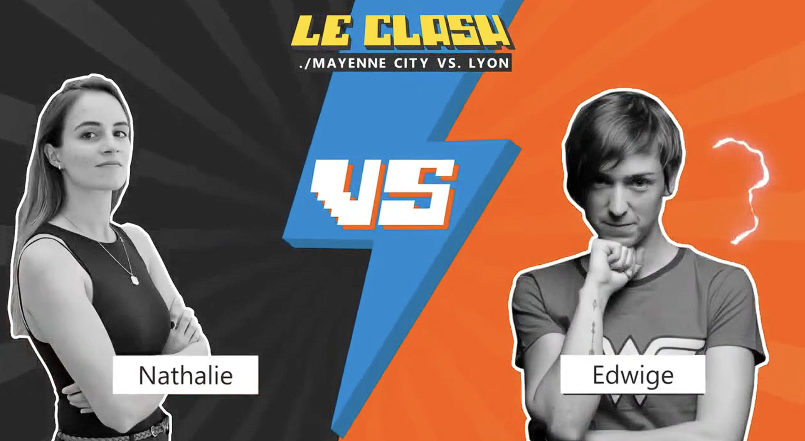
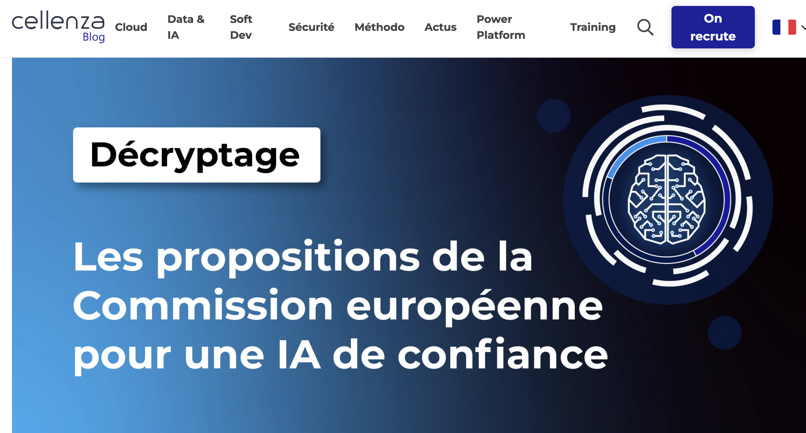

AI Agents & Data Platforms

 Hello everyone!
Hello everyone!
How will AI Agents revolutionize Data Platforms? Are AI Agents the end of centralized data platforms and the Lakehouse?

Hello everyone!
How will AI Agents revolutionize Data Platforms? Are AI Agents the end of centralized data platforms and the Lakehouse?

Talking about Responsible AI is easy; actually implementing it is where the real work begins.
I took a deep dive into Microsoft's Responsible AI Dashboard to see what's under the hood. I cut through the noise to show you exactly how to use these tools to build models you can trust and explain.
Building ethical AI doesn't have to be a drag—let's make it a competitive advantage.
👉 Discover how to implement it: LinkedIn Post
:gavel:
AI isn't just a tech issue; it's a geopolitical chessboard.
I recently shared my thoughts in Les Echos on why we need to stay ahead of European treaty evolutions regarding AI. We're not just waiting for the rules to be written—we're anticipating them and building the infrastructure to match.
Want to build compliant, future-proof AI strategies without the headache? I've outlined the roadmap. Let's dig in.
👉 Read the full opinion: Les Echos - Opinion IA | LinkedIn Post


The AI Act is coming in two years, and the clock is ticking.
ChatGPT, DALL-E, and Lensa have forced the regulators' hands, but you don't need to panic—you need to prepare. I've broken down what this means for your AI initiatives and how to stay ahead of the compliance curve without stifling innovation.
Let's build AI that's not just powerful, but bulletproof.
👉 Get ready for what's coming: https://www.linkedin.com/feed/update/urn activity:7027280121958920192/
LinkedIn Post
activity:7027280121958920192/
LinkedIn Post

Trust isn't given; it's engineered.
At the Cellenza Meetup, I took the stage to tackle the real-world execution of Responsible and Trustworthy AI. We didn't just talk philosophy—we talked frameworks, guardrails, and how to deploy generative AI without losing your shirt (or your reputation).
Let's build AI systems that people can actually rely on.
👉 Check out the discussion:https://www.eventbrite.fr/e/billets-lintelligence-artificielle-responsable-et-de-confiance-511577521137?aff=RS LinkedIn Post

Building an ML model is the easy part; keeping it alive in production is where champions are made.
I've shared my battle-tested strategies for mastering the 'Run' phase of an AI project. From drift detection to seamless MLOps life cycles, I'll show you how to keep your models sharp and your operations flawless.
Let's take control of your ML lifecycle.
👉 Dive into the operational roadmap: https://blog.cellenza.com/cloud-2/run/run-dun-projet-ia-garder-sous-controle-le-cycle-de-vie-dun-modele-ml/ LinkedIn Post

Build from scratch or buy off-the-shelf? It's the ultimate AI showdown.
In this 'Clash' episode, we throw down over the pros, cons, and hidden traps of custom AI versus out-of-the-box Microsoft solutions. I don't pull punches—I'll give you the straight talk you need to make the right architectural call for your business.
Ring the bell, let's go.
👉 Watch the clash: YouTube Video | LinkedIn Post


The European Commission has laid its cards on the table for Trustworthy AI.
Trying to decipher the proposals on your own? Don't bother. I've done the heavy lifting, stripping away the bureaucratic noise to give you the absolute essentials. We'll look at the risk categories, the obligations, and how to position your projects for success.
Let's make compliance your superpower.
👉 Get the essential breakdown: LinkedIn Post


If your data science team is drowning in unversioned notebooks and untracked experiments, it's time for an intervention. Enter MLFlow.
In this practical breakdown, I cut through the theory and show you exactly how to wield MLFlow to orchestrate your machine learning pipeline like a pro. Say goodbye to chaos and hello to reproducibility.
Let's get to work.
👉 Check out the practical guide: https://blog.cellenza.com/data/mlflow-application-pratique/ LinkedIn Post

Facial detection in video isn't just about throwing data at a neural network—it's an art.
In this whitepaper, I tear down the mechanics of using Deep Metric Learning to achieve pinpoint accuracy. Whether you're building security systems or advanced analytics, I'll walk you through the architecture that gets results.
Time to sharpen your computer vision skills. Let's dive in.